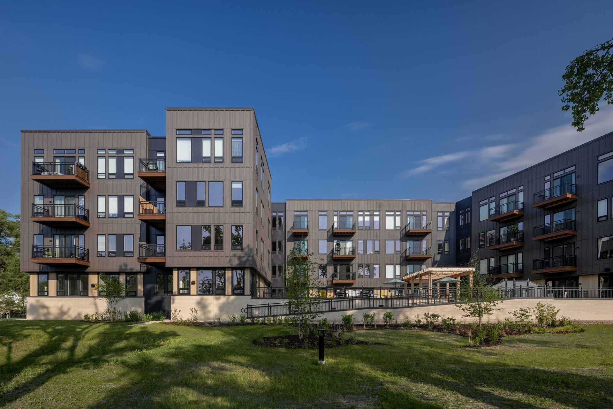
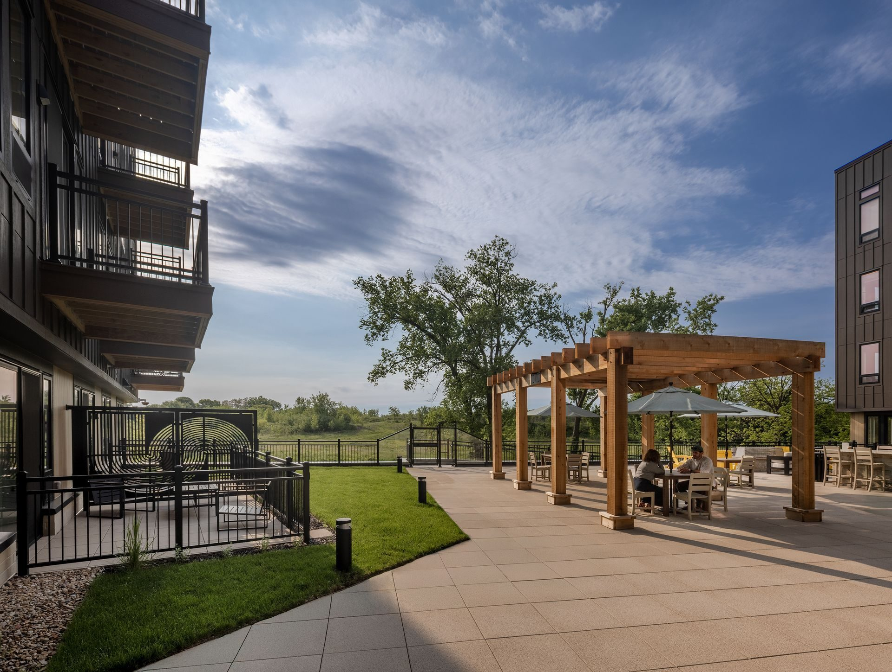

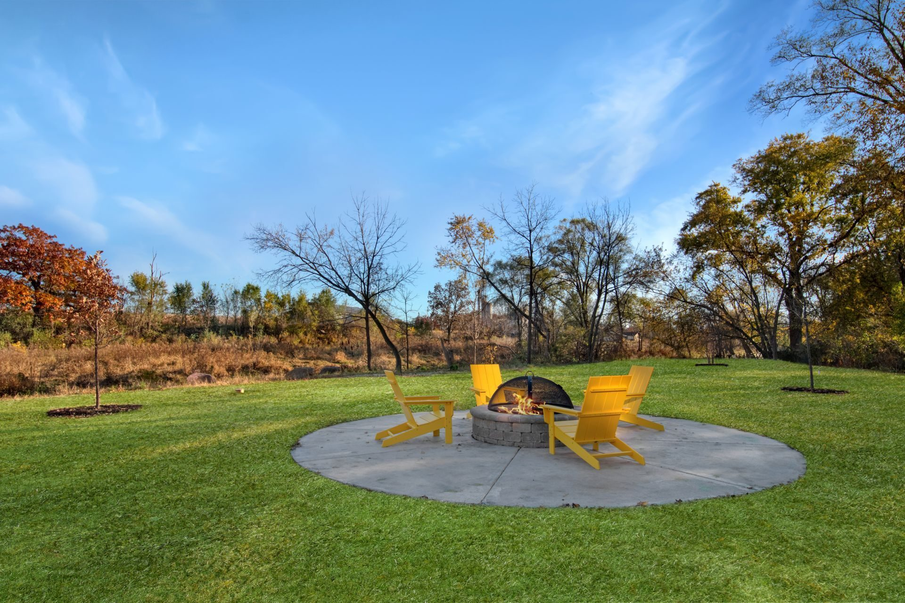
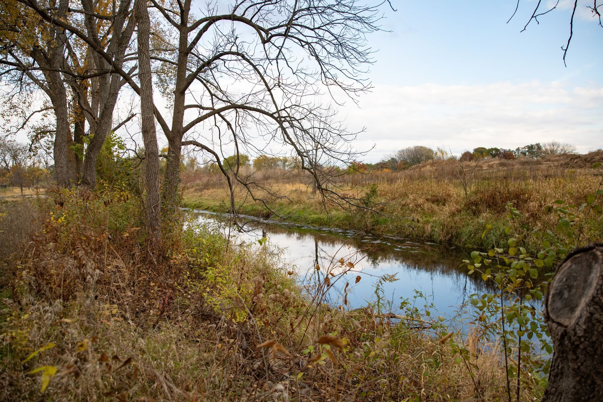
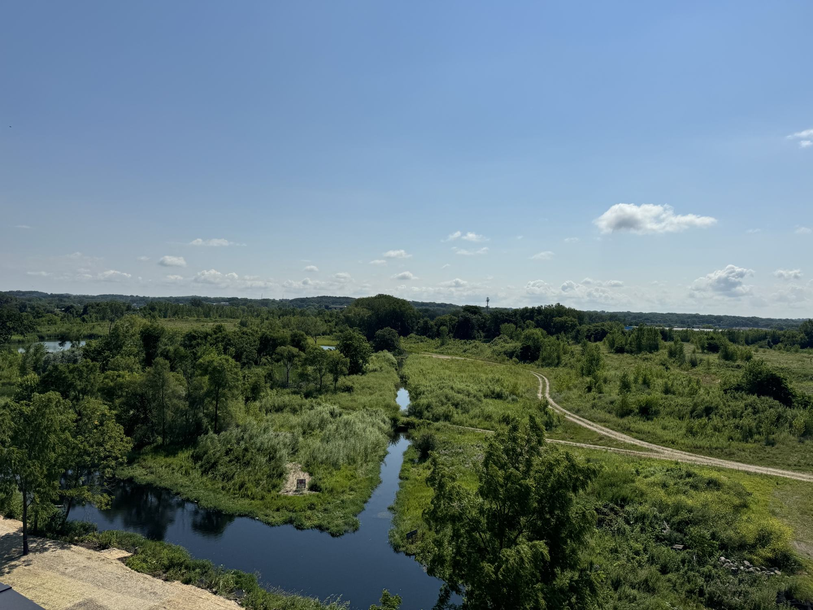
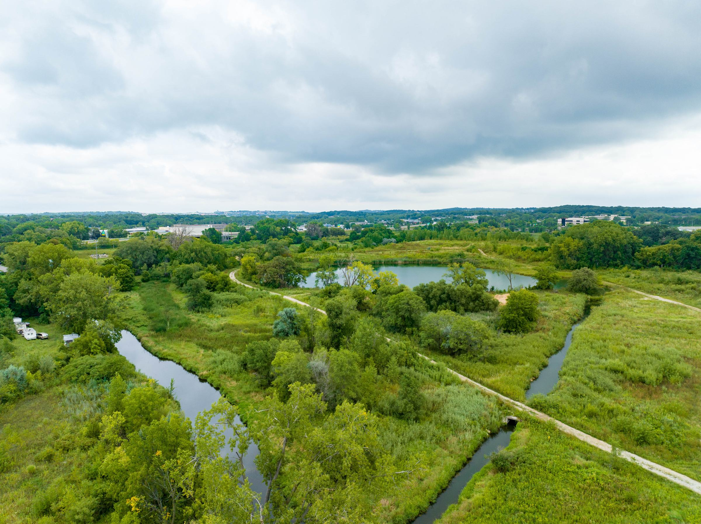
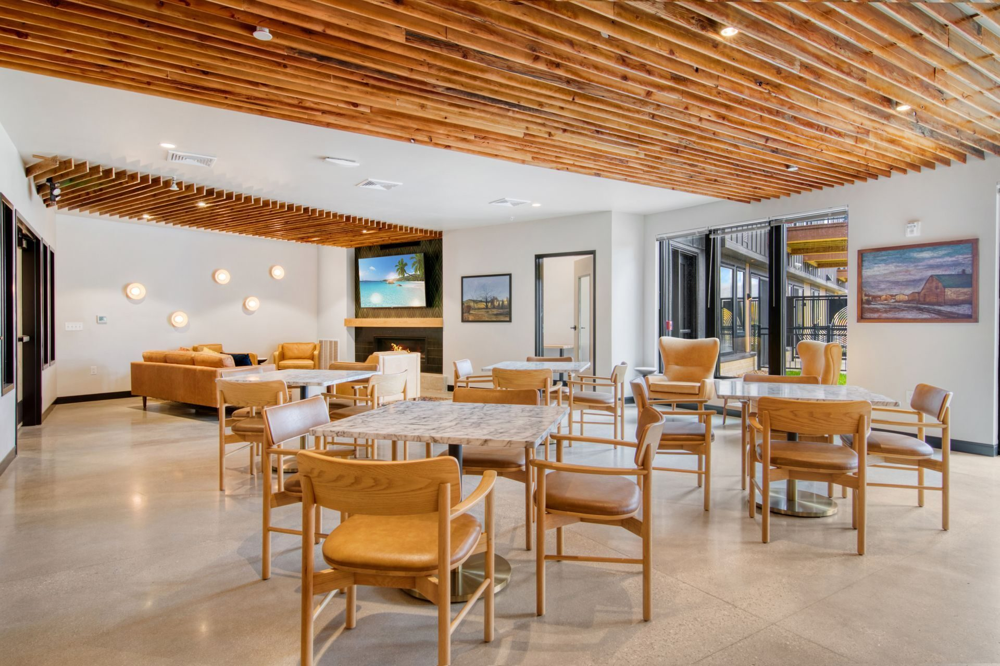
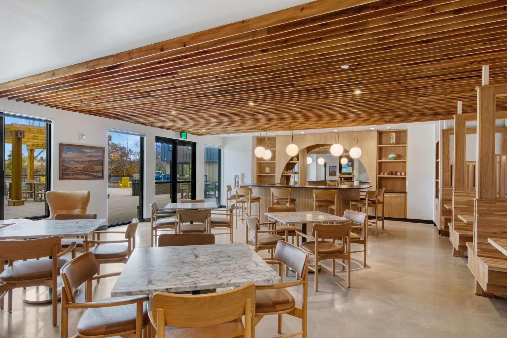
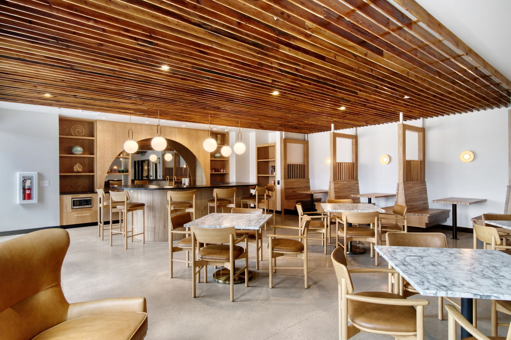
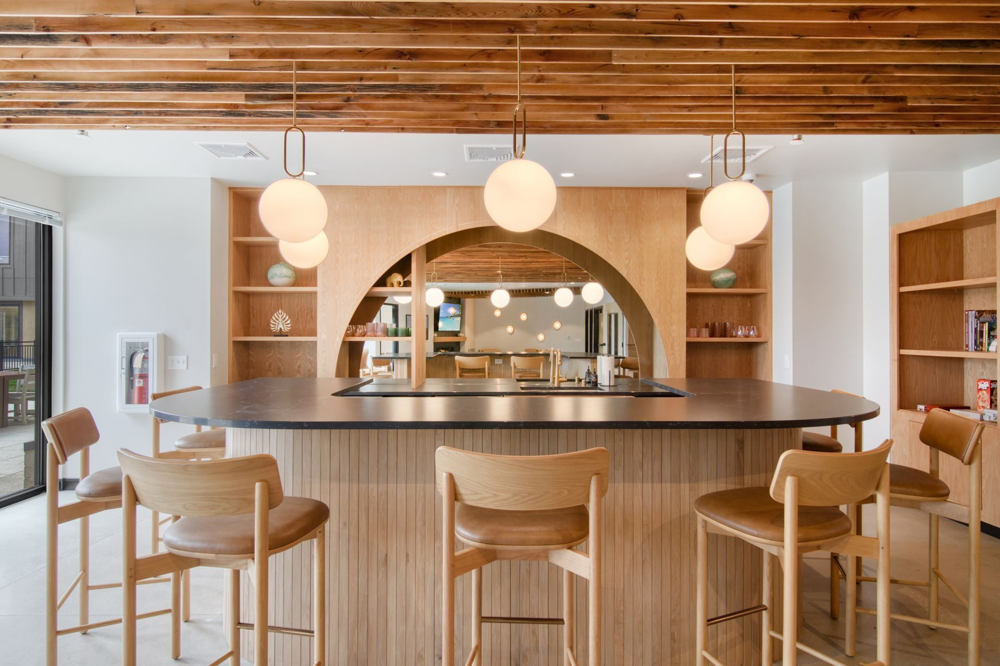
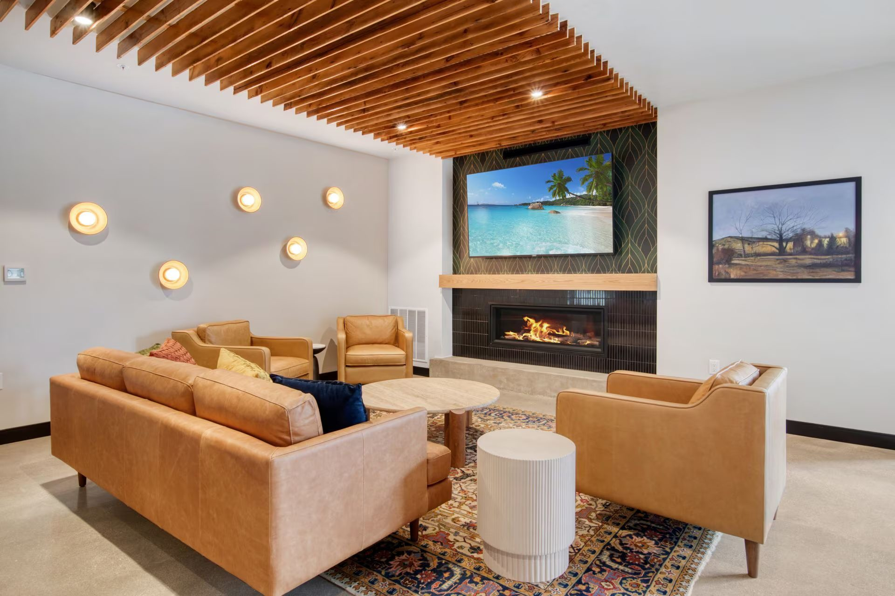
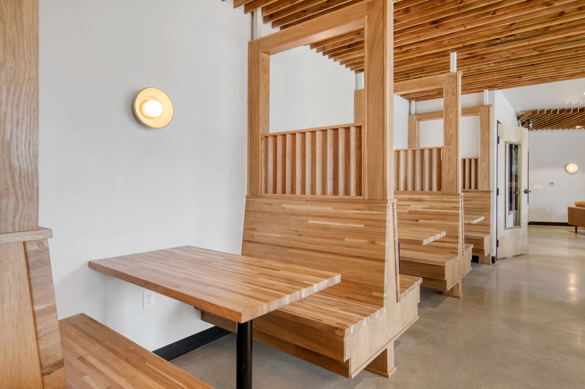
01 · Multifamily, new construction · Completed
Starkweather Place
- Address
- 215 N Fair Oaks Avenue, Madison
- Type
- Multifamily, new construction
- Apartments
- 112
- Site
- 4.33 acres
- Partners
- New Madison Development
with Stone House Development - Architect
- Potter Lawson
- Builder
- McGann Construction
- Opened
- November 1, 2024
- Website
- starkweatherplace.com
112 apartments on Starkweather Creek, with 2.5 acres of creek frontage.
- 112 apartments, four stories, on 4.33 acres.
- Site put under contract in 2020 in the Town of Blooming Grove, annexed into Madison, rezoned November 2022.
- Underground parking, rooftop solar, dog park, canoe and kayak storage, and 2.5 acres of Starkweather Creek frontage.
- Designed by Potter Lawson. Built by McGann Construction.
- Opened November 1, 2024. Full occupancy achieved spring 2026.
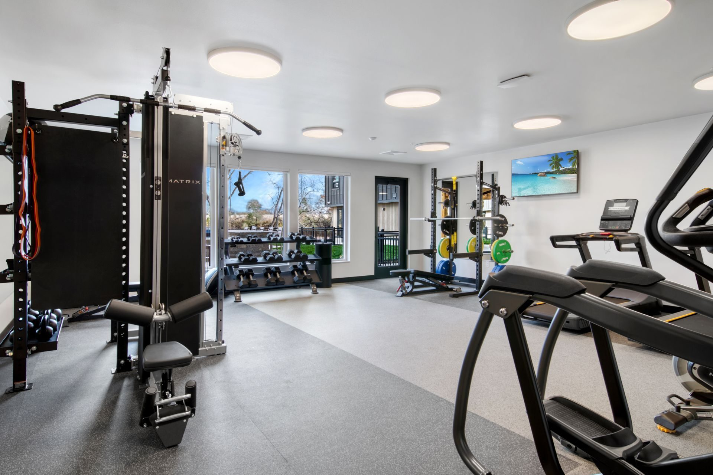